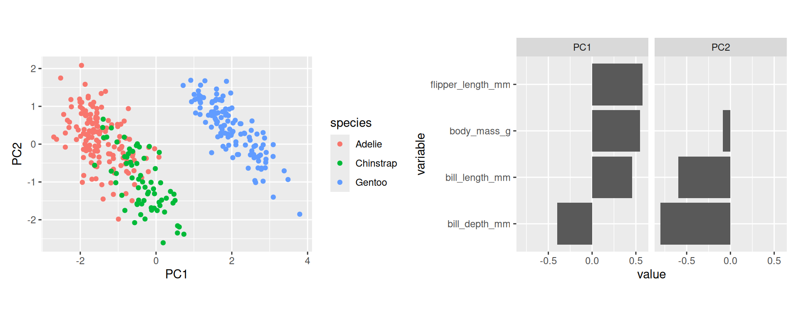
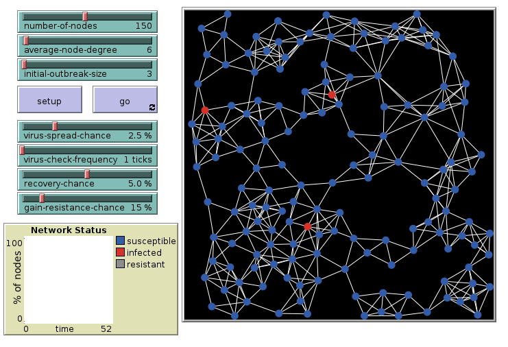

W#06: Principal Component Analysis, Math: Exponentiations and Logarithms, Epidemic Modeling, Calculus
Preliminaries
Principal component analysis (PCA)
A typical part of Exploratory Data Analysis.
PCA Description
Principle component analysis
- is a dimensionality-reduction technique, that means it can be used to reduce the number of variables
- computes new variables which represent the data in a different way
- transforms the data linearly to a new coordinate system where most of the variation in the data can be described with fewer variables than the original data
Today: Quick walk through how to use and interpret it.
Example: Numerical variables of penguins
peng <-
penguins |>
select(
species,
bill_length_mm,
bill_depth_mm,
flipper_length_mm,
body_mass_g
) |>
na.omit()
peng |> count(species)# A tibble: 3 × 2
species n
<fct> <int>
1 Adelie 151
2 Chinstrap 68
3 Gentoo 123We have 342 penguins and 4 numeric variables.
Two Variables
Example for the new axes.
Code
pca1 <- peng |>
select(flipper_length_mm, bill_length_mm) |>
prcomp(~., data = _, scale = FALSE)
pca_vec <- t(pca1$rotation) |> as_tibble() # Vectors with x = flipper_length, y = bill_length
ggplot(peng) +
geom_point(aes(x = flipper_length_mm, y = bill_length_mm, color = species)) +
geom_segment(
data = pca_vec,
aes(
x = mean(peng$flipper_length_mm),
y = mean(peng$bill_length_mm),
xend = c(pca1$sdev) * flipper_length_mm + mean(peng$flipper_length_mm),
yend = c(pca1$sdev) * bill_length_mm + mean(peng$bill_length_mm)
),
arrow = arrow(length = unit(0.3, "cm"))
) +
coord_fixed()
Computation in R
The basic function is base-R’s prcomp (there is an older princomp which is not advisable to use).
The base output
The prcomp object
Includes 4 different related entities.
The standard deviations related to each principal component.
The matrix of variable loadings. (It is also the matrix which rotates the original data vectors.)
The means for each original variable.
Note, there are also standard deviations of original variables in $scale when this is set to be used.
The centered (scaled, if set) and rotated data.
PC1 PC2
[1,] -20.4797199 0.66892267
[2,] -15.5543649 -0.28022355
[3,] -6.6673719 -1.91158941
[4,] -9.5557414 -4.84711693
[5,] -11.7528828 -1.54067330
[6,] -20.5331052 0.47617930
[7,] -6.9609911 -2.97167796
[8,] -10.2497505 -7.35278078
[9,] -11.0321810 1.06136223
[10,] -16.0081402 -1.91854222
[11,] -21.7904413 -0.31698266
[12,] -18.9821498 2.32942980
[13,] -10.9760146 -2.48220170
[14,] -5.2977029 -8.20555532
[15,] -17.2921689 -2.80807586
[16,] -7.0944544 -3.45353639
[17,] -4.1526997 -0.32526550
[18,] -18.8431243 -4.66132637
[19,] -6.1096072 3.84852331
[20,] -27.5727425 1.28457691
[21,] -21.8171340 -0.41335434
[22,] -13.6241501 -4.55038405
[23,] -16.8650864 -1.26612888
[24,] -21.5235147 0.64673421
[25,] -15.7117398 -4.59476098
[26,] -18.1518963 1.58064478
[27,] -14.3237215 0.41656672
[28,] -29.4734836 1.91480178
[29,] -21.0697395 2.28505287
[30,] -23.2640999 1.85518920
[31,] -23.8780310 -0.36135959
[32,] -13.6269312 -0.81407674
[33,] -17.1081014 1.60283324
[34,] -7.7083856 -5.67008518
[35,] -5.9972743 -3.23860456
[36,] -11.8863461 -2.02253174
[37,] -20.6159643 3.92337154
[38,] -20.8801098 -0.77665262
[39,] -17.4017207 0.54274469
[40,] -20.2100122 -2.10366777
[41,] -6.5339086 -1.42973098
[42,] -16.4886080 -3.65323258
[43,] -4.6893340 1.48360808
[44,] -17.1853983 -2.42258912
[45,] -11.6728048 -1.25155824
[46,] -18.9821498 2.32942980
[47,] -22.8342362 -0.33917112
[48,] -12.6337406 -4.72093895
[49,] -9.9883862 1.08355069
[50,] -15.5276723 -0.18385187
[51,] -13.4667753 -0.23584662
[52,] -12.9006672 -5.68465582
[53,] -1.3950124 -1.60790371
[54,] -15.9252810 -5.36573447
[55,] -10.2286201 0.21620552
[56,] -15.6878282 -0.76208199
[57,] -8.5147276 -1.08862116
[58,] -21.1737290 -1.83674117
[59,] -8.3517906 -4.24669835
[60,] -17.5324029 -3.67542104
[61,] -6.4004453 -0.94787255
[62,] -17.0252423 -1.84435900
[63,] -9.3449812 -0.33983614
[64,] -18.3092711 -2.73389264
[65,] -9.2115179 0.14202229
[66,] -7.9486195 -6.53743036
[67,] -13.1998487 0.72787024
[68,] -12.6604332 -4.81731064
[69,] -3.3758314 -1.26679390
[70,] -13.3010571 -7.13023111
[71,] -11.6461122 -1.15518656
[72,] -5.8905036 -2.85311781
[73,] -3.2718419 2.85500015
[74,] -12.7672039 -5.20279739
[75,] -6.0000554 0.49770275
[76,] -10.3620834 -0.26565292
[77,] -18.0957298 -1.96291915
[78,] -15.4715058 -3.72741580
[79,] -6.1869040 -0.17689906
[80,] -13.9711547 -5.80321597
[81,] -5.0096459 0.32714784
[82,] -15.3380425 -3.24555737
[83,] -9.9828239 -6.38906391
[84,] -11.3230191 -3.73503363
[85,] -7.3641622 -0.68094595
[86,] -12.5536626 -4.43182390
[87,] -13.3572235 -3.58666718
[88,] -12.9835263 -2.23746357
[89,] -11.8596534 -1.92616005
[90,] -1.1492162 -8.21317314
[91,] 3.1833380 -3.80988186
[92,] -17.9861781 -5.31373971
[93,] -15.5276723 -0.18385187
[94,] -15.4715058 -3.72741580
[95,] 5.9944106 -4.89977671
[96,] -12.0731947 -2.69713354
[97,] -5.7036550 -2.17851601
[98,] -24.9724301 -4.31259873
[99,] -8.7844354 1.68396928
[100,] -10.9732334 -6.21850901
[101,] 1.2292116 -3.37240036
[102,] -18.9259834 -1.21413413
[103,] -12.1532727 -2.98624860
[104,] -9.2354294 -3.69065670
[105,] -17.4284133 0.44637301
[106,] -3.2662796 -4.61761446
[107,] -12.0465021 -2.60076185
[108,] -20.7466465 -0.29479419
[109,] -3.9658510 0.34933630
[110,] -4.3634598 -4.83254629
[111,] -9.1075284 4.26381634
[112,] -8.7549616 -1.95596634
[113,] -4.2327776 -0.61438056
[114,] -10.7090880 -1.51848484
[115,] -5.0630312 0.13440447
[116,] -13.8671651 -1.68142192
[117,] -3.6132842 -5.87044638
[118,] -13.6775354 -4.74312742
[119,] -12.2361318 0.46094364
[120,] -15.4715058 -3.72741580
[121,] -4.4702304 -5.21803304
[122,] -25.0046850 3.06364419
[123,] 0.3722654 -2.71998702
[124,] -16.7021493 -4.42420607
[125,] -2.7324265 -2.69018073
[126,] -10.9226292 -2.28945833
[127,] -6.3470600 -0.75512918
[128,] -10.8692439 -2.09671496
[129,] 8.8027021 -2.25336424
[130,] -11.9664241 -2.31164679
[131,] -3.9925437 0.25296462
[132,] -9.5290487 -4.75074525
[133,] -3.5598989 -5.67770301
[134,] -14.9643453 -1.89635376
[135,] -11.2724149 0.19401705
[136,] -11.7767943 -5.37335229
[137,] -1.8754802 -3.34259407
[138,] -17.1853983 -2.42258912
[139,] -8.7549616 -1.95596634
[140,] -8.6214983 -1.47410791
[141,] -14.2970288 0.51293840
[142,] -15.6021880 -7.94558153
[143,] -11.3791856 -0.19146969
[144,] -10.3593023 -4.00196022
[145,] -16.6515451 -0.49515539
[146,] -11.7795755 -1.63704499
[147,] -18.2558858 -2.54114927
[148,] -7.8151562 -6.05557193
[149,] -9.2621221 -3.78702838
[150,] -15.5248912 -3.92015917
[151,] -0.5647588 -2.35668874
[152,] 10.3002722 -0.59285711
[153,] 29.6519063 -1.90596663
[154,] 10.0305645 2.17973333
[155,] 18.0873039 1.29715250
[156,] 14.5555295 -0.21498819
[157,] 9.4433259 0.05955623
[158,] 10.1134236 -1.26745892
[159,] 18.1701630 -2.15003975
[160,] 7.6254440 -2.75741114
[161,] 14.3419882 -0.98596168
[162,] 11.8034045 -6.40496458
[163,] 15.8929436 0.86728882
[164,] 13.0312668 -1.97186701
[165,] 12.8416371 1.08983849
[166,] 9.2564773 -0.61504558
[167,] 16.9367385 0.88947729
[168,] 8.2421563 -4.27716966
[169,] 20.7649133 -0.27460078
[170,] 8.3995311 0.03736776
[171,] 21.5951668 -1.02338580
[172,] 18.1406893 1.48989587
[173,] 13.8882130 -2.62428035
[174,] 12.3344765 -0.74122355
[175,] 14.2085249 -1.46782012
[176,] 13.3009745 -4.74445745
[177,] 14.1551396 -1.66056349
[178,] 14.6917739 -3.46943706
[179,] 14.6089148 -0.02224482
[180,] 9.8971012 1.69787490
[181,] 20.0147377 0.76329931
[182,] 21.2214696 -2.37258941
[183,] 7.4919807 -3.23926957
[184,] 6.1784781 -0.48886760
[185,] 32.2144016 7.34571526
[186,] 19.7745037 -0.10404587
[187,] 19.5876551 -0.77864767
[188,] 11.2934628 -4.49971932
[189,] 17.5562319 -4.36658853
[190,] 6.8485757 -1.81588274
[191,] 8.1031307 2.71358652
[192,] 6.5015712 -3.06871466
[193,] 24.7265513 -0.95682041
[194,] 9.1230140 -1.09690401
[195,] 16.0530996 1.44551894
[196,] 22.0756347 0.71130455
[197,] 15.4152569 -4.60370884
[198,] 9.1763994 -0.90416063
[199,] 24.9667853 -0.08947523
[200,] 11.9073940 -2.28317054
[201,] 13.9149057 -2.52790867
[202,] 9.4700186 0.15592792
[203,] 19.6143478 -0.68227599
[204,] 9.0696287 -1.28964738
[205,] 24.8600146 -0.47496198
[206,] 16.1893440 -1.80892993
[207,] 18.6801047 -4.05528501
[208,] 6.7951904 -2.00862611
[209,] 18.8135680 -3.57342658
[210,] 6.6350345 -2.58685623
[211,] 23.9763758 0.08107968
[212,] 7.1955803 -0.56305082
[213,] 19.9641335 -3.16575137
[214,] 13.0846521 -1.77912364
[215,] 31.7634075 1.97108929
[216,] 17.9299291 -3.01738492
[217,] 29.5985210 -2.09871001
[218,] 13.2181154 -1.29726521
[219,] 28.5547261 -2.12089847
[220,] 18.2797148 -5.50086030
[221,] 23.0927369 0.63712133
[222,] 15.5459390 -0.38554310
[223,] 20.0175188 -2.97300799
[224,] 20.4979867 -1.23831764
[225,] 16.1893440 -1.80892993
[226,] 15.1989345 -1.63837502
[227,] 29.2782091 -3.25517024
[228,] 8.7465357 1.29019969
[229,] 20.3083569 1.82338786
[230,] 13.9149057 -2.52790867
[231,] 21.6246406 -4.66332142
[232,] 12.0647688 2.03136689
[233,] 21.6457710 2.90566487
[234,] 11.6109936 0.39304822
[235,] 23.8696051 -0.30440707
[236,] 10.9436771 -2.01624394
[237,] 27.9380138 -0.60113995
[238,] 16.3255884 -5.06337880
[239,] 18.4343085 2.54998442
[240,] 11.6376863 0.48941990
[241,] 30.2124521 0.11783878
[242,] 17.4199874 -1.11213966
[243,] 28.3117111 0.74806366
[244,] 11.1038331 -1.43801382
[245,] 23.7361418 -0.78626550
[246,] 12.7643402 -2.93558388
[247,] 26.0105801 -0.06728677
[248,] 15.9997143 1.25277557
[249,] 21.1146989 -2.75807616
[250,] 3.2044684 3.75910443
[251,] 25.1269412 0.48875489
[252,] 18.6506309 -0.41534939
[253,] 29.2993395 4.31381605
[254,] 14.4487589 -0.60047494
[255,] 27.4842386 -2.23945862
[256,] 15.4391684 -0.77102985
[257,] 14.3419882 -0.98596168
[258,] 8.1620783 -4.56628472
[259,] 19.9585712 4.30686324
[260,] 6.6617271 -2.49048455
[261,] 8.9066916 1.86842981
[262,] 16.2933335 2.31286412
[263,] 28.6348041 -1.83178341
[264,] 11.5336968 -3.63237414
[265,] 30.0522962 -0.46039134
[266,] 16.1092660 -2.09804499
[267,] 31.0132319 3.00898937
[268,] 15.6554908 -3.73636366
[269,] 21.6218595 -0.92701412
[270,] 13.4850420 -0.33354834
[271,] 14.3419882 -0.98596168
[272,] 22.0489420 0.61493287
[273,] 11.0237551 -1.72712888
[274,] 13.2420270 2.53541378
[275,] -7.9035776 4.86423493
[276,] -3.1144671 7.16953757
[277,] -5.6586131 9.22314928
[278,] -12.0520643 4.87185275
[279,] -1.4300484 9.50464651
[280,] -2.4682810 2.00984344
[281,] -21.5023843 8.21572050
[282,] -1.8037456 8.15544290
[283,] -5.1458903 3.58159671
[284,] -0.8400288 7.88851631
[285,] -6.9131681 4.69368002
[286,] -4.5881256 9.34170943
[287,] -14.5161323 7.21457952
[288,] 2.2379704 7.76233833
[289,] -9.9911673 4.81985800
[290,] 1.8375806 6.31676303
[291,] -2.0706722 7.19172604
[292,] -15.4348073 18.88317139
[293,] -9.8577040 5.30171643
[294,] -4.2917252 6.66549067
[295,] -19.5988621 3.84918832
[296,] -8.3334413 7.05859525
[297,] -13.6030197 3.01860225
[298,] -5.8454617 8.54854747
[299,] -4.9590417 4.25619852
[300,] -1.6168970 8.83004470
[301,] 0.8738637 6.58368963
[302,] 0.6069371 5.61997276
[303,] -8.8939871 5.03478983
[304,] 6.3063792 7.46560544
[305,] -14.2169508 0.80205346
[306,] 2.8252089 9.88251543
[307,] -13.7898683 2.34400044
[308,] 3.8984776 6.26476828
[309,] -4.1582619 7.14734911
[310,] -0.8906330 3.95946563
[311,] -4.7188078 5.12354369
[312,] 10.9114222 5.35999898
[313,] -7.7968070 5.24972167
[314,] 6.4932278 8.14020725
[315,] 10.1106424 2.46884839
[316,] -12.8022399 5.90975284
[317,] -2.8742331 8.03688275
[318,] -4.3156367 2.83281168
[319,] -2.8742331 8.03688275
[320,] 1.9176585 6.60587809
[321,] -8.8700756 8.86746882
[322,] 12.0380762 1.93499520
[323,] -11.3875289 11.01745222
[324,] -1.2404187 6.44294101
[325,] -0.7304770 4.53769575
[326,] 2.0778145 7.18410821
[327,] -7.1534020 3.82633484
[328,] 3.8183996 5.97565322
[329,] -13.7898683 2.34400044
[330,] -1.5635117 9.02278808
[331,] -9.2142990 3.87832960
[332,] 3.4447024 4.62644961
[333,] 2.7212194 5.76072138
[334,] -6.2163778 3.46303656
[335,] 7.0298621 6.33133367
[336,] -10.7146502 5.95412977
[337,] -5.2259683 3.29248165
[338,] 9.0345927 9.82290284
[339,] 0.9328113 -0.69618161
[340,] -6.1123883 7.58483061
[341,] 10.5911103 4.20353874
[342,] -1.1336480 6.82842776PCA as Exploratory Data Analysis
Suppose we do a PCA with all 342 penguins (rows) and all 4 numeric variables.
- How long will the vector of standard deviations be? 4
- What dimensions will the rotation matrix have? 4 x 4
- What dimensions will the rotated data frame have? 342 x 4
When we do a PCA for exploration there are 3 things to look at:
- The data in PC coordinates - the centered (scaled, if set) and rotated data.
- The rotation matrix - the variable loadings.
- The variance explained by each PC - based on the standard deviations.
All variables
Now, with scale = TRUE (recommended). Data will be centered and scaled (a.k.a. standardized) first.
Standard deviations (1, .., p=4):
[1] 1.6594442 0.8789293 0.6043475 0.3293816
Rotation (n x k) = (4 x 4):
PC1 PC2 PC3 PC4
bill_length_mm 0.4552503 -0.597031143 -0.6443012 0.1455231
bill_depth_mm -0.4003347 -0.797766572 0.4184272 -0.1679860
flipper_length_mm 0.5760133 -0.002282201 0.2320840 -0.7837987
body_mass_g 0.5483502 -0.084362920 0.5966001 0.5798821Explore data in PC coordinates
- Start plotting PC1 against PC2. By default these are the most important ones. Drill deeper later.
- Append the original data. Here used to color by species.
Variable loadings
- The columns of the rotation matrix shows how the original variables load on the principle components.
- We can interpret these loadings and give descriptive names to principal components.
- For plotting we bring the rotation matrix to long format with
PCandvaluecolumn.
Variance explained
- Principle components are by default sorted by importance.
- The squares of the standard deviation for each component gives its variances and variances have to sum up to the sum of the variances of the original variables.
- When original variables were standardized their original variances are all each one. Consequently, the variances of the principal components sum up to the number of original variables.
- A typical plot to visualize the importance of the components is to plot the percentage of the variance explained by each component.
Interpretations (1)
- The first component explains almost 70% of the variance.
- The first two explain about 88% of the total variance.
Interpretations (2)

- To score high on PC1 a penguin needs to be generally large but with low bill depth.
- Penguins scoring high on PC2 are penguins with generally small bills.
Interpretations (3)



Apply PCA
- Besides standardization, PCA may benefit from preprocessing steps of data transformation with variables with skew distributions. Use log, square-root, or Box-Cox transformation. This may result in less outliers.
- PCA is a often a useful step of exploratory data analysis when you have a large number of numerical variables to show the empirical dimensionality of the data and its structure.
- It is related to the correlation-matrix and can “summarize” its structure.
- Limitation: PCA is only sensitive for linear relation ships (no U-shaped) or the like
- The principal components can be used as predictors in a model instead of the raw variables.
Properties of PCA
- The principal components (the columns of the rotation matrix) are maximally uncorrelated (actually they are even orthogonal).
- This also holds for the columns of the rotated data.
- The total variances of all prinicipal components sum up to the number of variables (when variables are standardized)
- The PCA is unique. All principle components together are a complete representation of the data. (Unlike other technique of dimensionality reduction which may rely on starting values, random factors, or tuning parameters)
- To be precise: It is unique modulo the sign of the PCs. When \(x\) is a PC, then \(-x\) is as well and can replace it.
- To be precise: It is unique modulo the sign of the PCs. When \(x\) is a PC, then \(-x\) is as well and can replace it.
Relations of PCA
- A technique similar in spirit is factor analysis (e.g.
factanal). It is more theory based as it requires to specify to the theoriezed number of factors up front. - PCA is an example of the importance of linear algebra (“matrixology”) in data science techniques.
- PCA is based on the eigenvalue decomposition of the covariance matrix (or correlation matrix in the standardized case) of the data.

Math: Exponentiations and Logarithms
Rules for Exponentiation
\(x^0\)
\(0^x\)
\(0^0\)
\((x\cdot y)^a\)
\(x^{-a}\), \(x^{-1}\)
\(x^\frac{a}{b}\), \(x^\frac{1}{2}\)
\((x^a)^b\)
\(x^0 = 1\)
\(0^x = 0\) for \(x\neq 0\)
\(0^0 = 1\) (discontinuity in \(0^x\))
\((x\cdot y)^a = x^a\cdot x^b\)
\(x^{-a} = \frac{1}{x^a}\), \(x^{-1} = \frac{1}{x}\)
\(x^\frac{a}{b} = \sqrt[b]{x^a} = (\sqrt[b]{x})^a,\ x^\frac{1}{2} = \sqrt{x}\)
\((x^a)^b = x^{a\cdot b} = (x^b)^a \neq x^{a^b} = x^{(a^b)}\)
Example: \((4^3)^2 = 64^2 = 4096 \qquad 4^{3^2} = 4^9 = 262144\)
More rules for exponentiation
\(x^a\cdot x^b\)
\(x^a\cdot x^b = x^{a+b}\) Multiplication of powers (with same base \(x\)) becomes addition of exponents.
\((x+y)^a\)
No “simple” form! For \(a\) integer use binomial expansion. \((x+y)^2 = x^2 + 2xy + y^2\)
\((x+y)^3 = x^3 + 3x^2y + 3xy^2 + y^3\)
\((x+y)^n = \sum_{k=0}^n {n \choose k} x^{n-k}y^k\)
Pascal’s triangle

We meet it again in Probability:
A row represents a binomial distribution
Which tends to mimics the normal distribution more and more
and is related to the central limit theorem
Logarithms
Definition: A logarithm of \(a\) for some base \(b\) is the value of the exponent which brings \(b\) to \(a\): \(\log_b(a) = x\) means that \(b^x =a\)
Most common:
- \(\log_{10}\) useful for plotting data in logarithmic scales because the numbers can be interpreted easiest (number of decimals of the original values)
- \(\log_{e}\) natural logarithm (also \(\log\) or \(\ln\)) useful in calculus and statistics because of nice mathematical properties
\(\log_{10}(100) =\)
\(2\)
\(\log_{10}(1) =\)
\(0\)
\(\log_{10}(6590) =\)
\(3.818885\)
\(\log_{10}(0.02) =\)
\(-1.69897\)
Rules for logarithms
Usually only one base is used in the same context, because changing base is easy:
\(\log_c(x) = \frac{\log_b(x)}{\log_b(c)} = \frac{\log(x)}{\log(c)}\)
\(\log(x\cdot y)\)
\(= \log(x) + \log(y)\) Multiplication \(\to\) addition.
\(\log(x^y)\)
\(= y\cdot\log(x)\)
\(\log(x+y)\)
complicated!
Also changing bases for powers is easy: \(x^y = (e^{\log(x)})^y = e^{y\cdot\log(x)}\)
Epidemic Modeling
An example for modeling the data generating process
SIR model
- Assume a population of \(N\) individuals.
- Individuals can have different states, e.g.: Susceptible, Infectious, Recovered, …
- The population divides into compartments of these states which change over time, e.g.: \(S(t), I(t), R(t)\) number of susceptible, infectious, recovered individuals
Now we define dynamics like
where the numbers on the arrows represent transition probabilities.
Agent-based Simulation
Agent-based model: Individual agents are simulated and interact with each other.
Explore and analyze with computer simulations.
A tool: NetLogo https://ccl.northwestern.edu/netlogo/

We look at the model “Virus on a Network” from the model library.
Direct Link to Virus on a Network in NetLogoWeb
Virus on a Network: 6 links, initial
Agents connected in a network with on average 6 links per agent. 3 are infected initially.
Virus on a Network: 6 links, final
The outbreak dies out after some time.

Virus on a Network: 15 links, initial
Repeat the simulation with 15 links per agent. 3 are infected initially. 
Virus on a Network: 15 links, final
The outbreak had infected most agents.

SI model
Now, we only treat the SI part of the model. We ignore recovery.
- People who are susceptible can become infected through contact with infectious
- People who are infectious stay infectious
The parameter \(\beta\) is the average number of contacts per unit time multiplied with the probability that an infection happens during such a contact.
SI-model: Simulation in R
- We produce a vector of length \(N\) with entries representing the state of each individual as
"S"or"I". - We model the random infection process in each step of unit time
Setup
Parameters: \(N=150, \beta=0.3\), a function to produce randomly infect individuals
[1] TRUE FALSE TRUE TRUE FALSE TRUESI-model: Simulation in R
Iteration over 75 time steps.
tmax <- 75
sim_run <- list(init) # list with one element
# This list will collect the states of
# all individuals over tmax time steps
for (i in 2:tmax) {
# Every agents has a contact with a random other
contacts <- sample(sim_run[[i-1]], size = N)
sim_run[[i]] <- if_else( # vectorised ifelse
# conditions vector: contact is infected
# and a random infection happens
contacts == "I" & randomly_infect(N, beta),
true = "I",
false = sim_run[[i-1]]
) # otherwise state stays the same
}
sim_output <- tibble( # create tibble for ggplot
# Compute a vector with length tmax
# with the count of "I" in sim_run list
t = 0:(tmax-1), # times steps
# count of infected and output a vector
infected = sim_run |> map_dbl(\(x) sum(x == "I")))
sim_output |>
ggplot(aes(t,infected)) + geom_line() +
theme_minimal(base_size = 20)SI-model: Simulation in R
Run with \(N = 10000\)
N <- 10000
init <- rep("S",N) # All susceptible
init[1] <- "I" # Infect one individual
tmax <- 75
sim_run <- list(init) # list with one element
# This list will collect the states of
# all individuals over tmax time steps
for (i in 2:tmax) {
# Every agents has a contact with a random other
contacts <- sample(sim_run[[i-1]], size = N)
sim_run[[i]] <- if_else( # vectorised ifelse
# conditions vector: contact is infected
# and a random infection happens
contacts == "I" & randomly_infect(N, beta),
true = "I",
false = sim_run[[i-1]]
) # otherwise state stays the same
}
sim_output <- tibble( # create tibble for ggplot
# Compute a vector with length tmax
# with the count of "I" in sim_run list
t = 0:(tmax-1), # times steps
# count of infected, notice map_dbl
infected = map_dbl(sim_run, \(x) sum(x == "I")))
sim_output |>
ggplot(aes(t,infected)) + geom_line() +
theme_minimal(base_size = 20)New programming concepts
From base R:
runif random numbers from uniform distribution
sample random sampling from a vector
for loop over commands with index (i) taking values of a vector (2:tmax) one by one if_else vectorized version of conditional statements
Calculus
The mathematics of the change and the accumulation of quantities
Motivation: SI model with
population compartments
Two compartments:
\(S(t)\) is the number of susceptible people at time \(t\).
\(I(t)\) is the number of infected people at time \(t\).
It always holds \(S(t) + I(t) = N\). (The total population is constant.)
How many infections per time?
The change of the number of infectious
\[\frac{dI}{dt} = \underbrace{\beta}_\text{infection prob.} \cdot \underbrace{\frac{S}{N}}_\text{frac. of $S$ still there} \cdot \underbrace{\frac{I}{N}}_\text{frac. $I$ to meet} \cdot N = \frac{\beta\cdot S\cdot I}{N}\]
where \(dI\) is the change of \(I\) (the newly infected here) and \(dt\) the time interval.
Interpretation: The newly infected are from the fraction of susceptible times the probability that they meet an infected times the infection probability times the total number of individuals.
Same logic as our Simulation in R!
Using \(S = N - I\) we rewrite
\[\frac{dI}{dt} = \frac{\beta (N-I)I}{N}\]
Ordinary differential equation
We interpret \(I(t)\) as a function of time which gives us the number of infectious at each point in time. The change function is now
\[\frac{dI(t)}{dt} = \frac{\beta (N-I(t))I(t)}{N}\]
and \(\frac{dI(t)}{dt}\) is also called the derivative of \(I(t)\).
Derivatives
- The derivative of a function is also a function with the same domain.
- Measures the sensitivity to change of the function output when the input changes (a bit)
- Example from physics: The derivative of the position of a moving object is its speed. The derivative of its speed is its acceleration.
- Graphically: The derivative is the slope of a tangent line of the graph of a function.

Differentiation
is the process to compute the derivative. For parameters \(a\) and \(b\) and other functions \(g\) and \(h\), rules of differentiation are
Function \(f(x)\)
Its derivative \(\frac{df(x)}{dx}\) or \(\frac{d}{dx}f(x)\) or \(f'(x)\)
\(a\cdot x\)
\(b\)
\(x^2,\ x^{-1} = \frac{1}{x},\ x^k\)
\(g(x) + h(x)\)
\(g(x)\cdot h(x)\)
\(g(h(x))\)
\(e^x,\ 10^x = e^{\log(10)x}\)
\(\log(x)\)
\(a\)
\(0\)
\(2\cdot x,\ -x^{-2} = -\frac{1}{x^2},\ k\cdot x^{k-1}\)
\(g'(x) + h'(x)\)
\(g'(x)\cdot h(x) + g(x)\cdot h'(x)\) (product rule)
\(g'(h(x))\cdot h'(x)\) (chain rule)
\(e^x,\ 10^x = \log(10)\cdot10^x\)
\(\frac{1}{x}\) (A surprising relation to me at least)
Differential equation
In a differential equation the unknown is a function!
We are looking for a function which derivative is a function of the function itself.
Example: SI-model
\[\frac{dI(t)}{dt} = \frac{\beta (N-I(t))I(t)}{N}\]
Which function \(I(t)\) fulfills this equation?
The analytical solution1
\(I(t) = \frac{N}{1 + (\frac{N}{I(0)} - 1)e^{-\beta t}}\)
Which is called the logistic equation. Note, we need to specify the initial number of infectious individuals \(I(0)\).
SI-model: Logistic Equation
\(I(t) = \frac{N}{1 + (\frac{N}{I(0)} - 1)e^{-\beta t}}\)
Plot the equation for \(N = 10000\), \(I_0 = 1\), and \(\beta = 0.3\)
SI-model: Numerical integration
Another way of solution is numerical integration, e.g. using Euler’s method.
We compute the solution step-by-step using increments of, e.g. \(dt = 1\).
N <- 10000
I0 <- 1
dI <- function(I,N,b) b*I*(N - I)/N
beta <- 0.3
dt <- 1 # time increment,
# supposed to be infinitesimally small
tmax <- 75
t <- seq(0,tmax,dt)
# this is the vector of timesteps
It <- I0 # this will become the vector
# of the number infected I(t) over time
for (i in 2:length(t)) {
# We iterate over the vector of time steps
# and incrementally compute It
It[i] = It[i-1] + dt * dI(It[i-1], N, beta)
# This is called Euler's method
}
tibble(t, It) |> ggplot(aes(t,It)) +
geom_line(color = "red") +
geom_function(
fun = function(t) N / (1 + (N/I0 - 1)*exp(-beta*t)), color = "blue") +
# In blue: Analytical solution for comparison
theme_minimal(base_size = 20)Why do the graphs deviate? The step size \(dt\) must be “infinitely” small
Numerical integration with smaller \(dt\)
We compute the solution step-by-step using small increments of, e.g. \(dt = 0.05\).
N <- 10000
I0 <- 1
dI <- function(I,N,b) b*I*(N - I)/N
beta <- 0.3
dt <- 0.05 # time increment,
# supposed to be infinitesimally small
tmax <- 75
t <- seq(0,tmax,dt)
# this is the vector of timesteps
It <- I0 # this will become the vector
# of the number infected I(t) over time
for (i in 2:length(t)) {
# We iterate over the vector of time steps
# and incrementally compute It
It[i] = It[i-1] + dt * dI(It[i-1], N, beta)
# This is called Euler's method
}
tibble(t, It) |> ggplot(aes(t,It)) +
geom_line(color = "red") +
geom_function(
fun = function(t) N / (1 + (N/I0 - 1)*exp(-beta*t)), color = "blue") +
# In blue: Analytical solution for comparison
theme_minimal(base_size = 20)Mechanistic model
The SI model is a potential answer to the mechanistic question How do epidemics spread?
The examples above show 3 different ways to explore the model:
- Agent-based simulation
- We model every individual explicitly
- Simulation involve random numbers! So simulation runs can be different!
- Numerical integration of differential equation
- Needs a more abstract concept of compartments
- Analytical solutions of differential equation
- often not possible (therefore numerical integration is common)
Differentiation with data
We can do calculus operations with data!
In empirical data we can compute the increase in a vector with the function diff:
The diff of our simulation output
2nd derivative: Change of change
In empirical data: Derivatives of higher order tend to show fluctuation
Interpretation in SI-model
- \(I(t)\) total number of infected
- \(I'(t)\) number of new cases per day (time step)
- \(I''(t)\) how the number of new cases has changes compared to yesterday
- 2nd derivatives are a good early indicator for the end of a wave.
Integration
The integral of the daily new cases from the beginning to day \(s\) is \(\int_{-\infty}^s f(t)dt\) and represents the total cases at day \(s\).
- The integral of a function \(f\) up to time \(s\) is also called the anti-derivative \(F(s) = \int_{-\infty}^s f(t)dt\).
- The symbol \(\int\) comes from an S and means “sum”.
- Compute the anti-derivative of data vector with
cumsum.
- Empirically: Derivatives tend to become noisy, while integrals tend to become smooth.
The fundamental theorem of calculus
The integral of the derivative is the function itself.
This is not a proof but shows the idea:
[1] 1 3 7 12 17 20 20[1] 1 2 4 5 5 3 0[1] 1 2 1 0 -2 -3[1] 1 2 4 5 5 3 0MDSSB-DSCO-02: Data Science Concepts